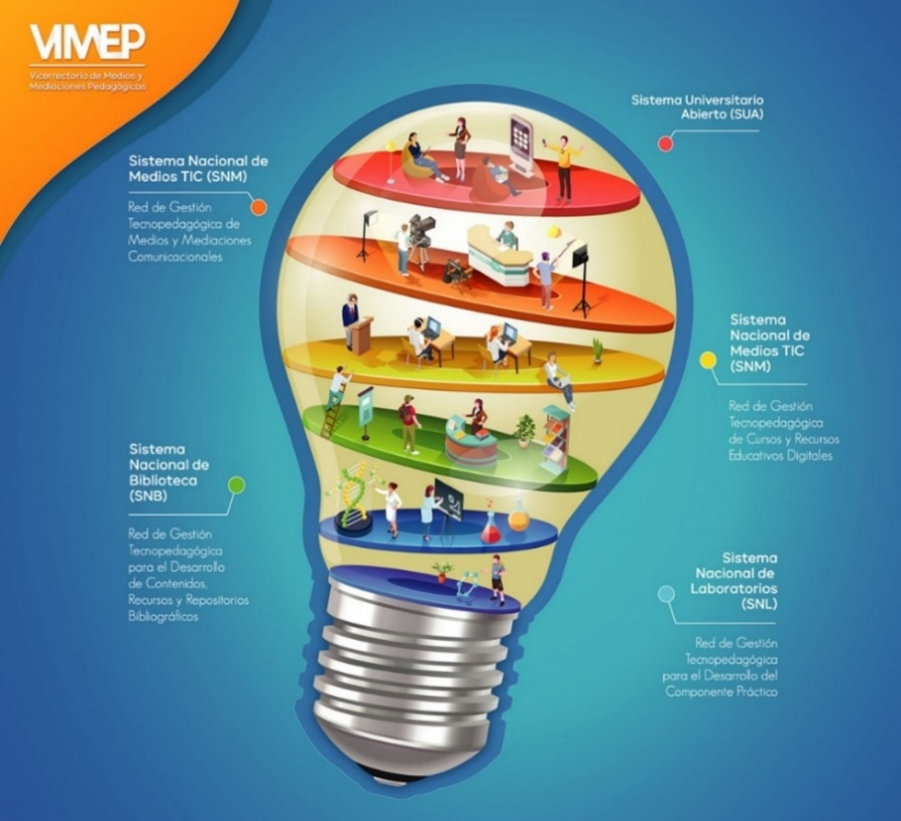
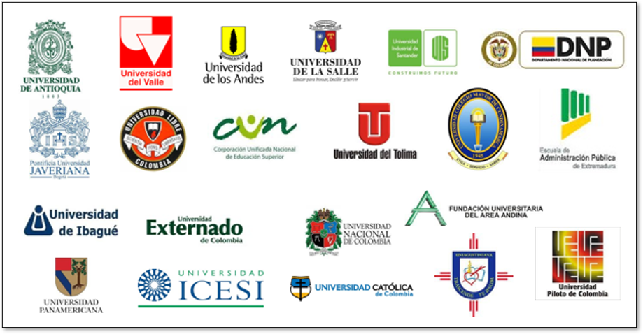
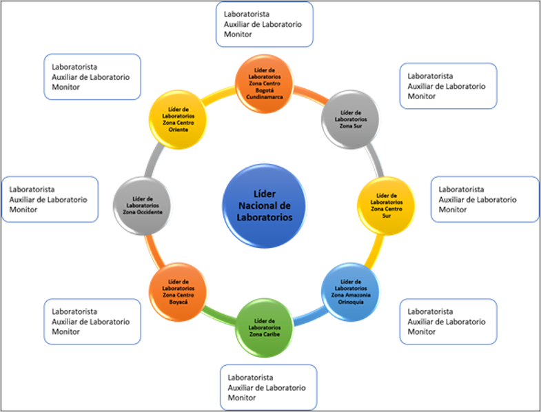
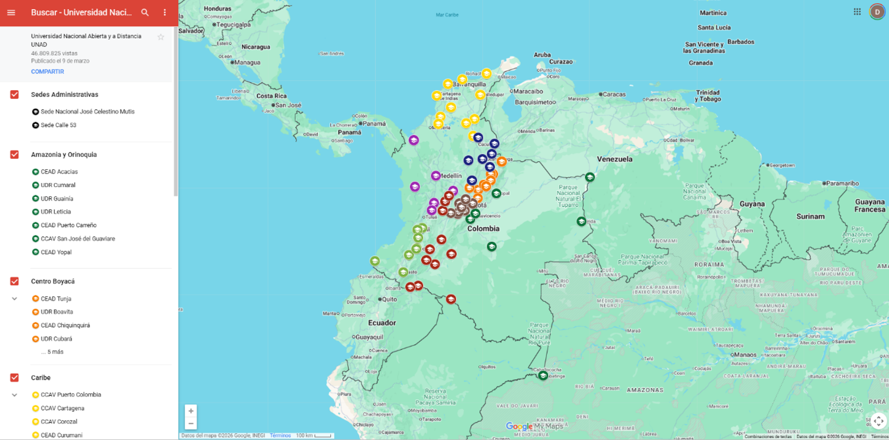

Medios Educativos
Programa de Medicina Veterinaria · Universidad Nacional Abierta y a Distancia — UNAD
1. Introducción y Política Institucional
VIMEPLa UNAD cuenta con medios educativos (bibliográficos, tecnológicos y logísticos) para garantizar el desarrollo de actividades académicas en modalidad abierta y a distancia.
Instancia responsable
Vicerrectoría de Medios y Mediaciones Pedagógicas (VIMEP) · Gestión estratégica de los medios y mediaciones, conforme al Estatuto Organizacional (Acuerdo 039 de 2019).
Redes de Gestión de la VIMEP
Sistema Nacional de Biblioteca (SNB)
Gestión de recursos bibliográficos físicos y virtuales.
Sistema Nacional de Laboratorios (SNL)
Escenarios para el desarrollo de competencias técnicas y científicas.
Sistema Nacional de Medios TIC (SNM)
Medios y mediaciones comunicacionales institucionales.
Red de Gestión Tecnopedagógica
Diseño y virtualización de cursos y recursos educativos digitales.
Criterio del Par Académico
Existencia de una política institucional consolidada de medios educativos.
Evidencia que Sustenta
Estatuto Organizacional (Acuerdo 039 de 2019) y estructura de la VIMEP.
2. Redes de Gestión – VIMEP
Clic en la imagen para ampliarLa Vicerrectoría de Medios y Mediaciones Pedagógicas (VIMEP) articula su gestión estratégica a través de cuatro redes especializadas que operan de manera articulada en todo el territorio nacional.
SNB · Biblioteca
Sistema Nacional de Biblioteca.
SNL · Laboratorios
Sistema Nacional de Laboratorios.
SNM · Medios TIC
Sistema Nacional de Medios TIC.
Cursos y RED
Red de Gestión Tecnopedagógica.
Idea clave
Las cuatro redes operan de manera articulada para garantizar la suficiencia, actualización y accesibilidad de los medios educativos.
{kind=link}

Adaptado de Vicerrectoría de Medios y Mediaciones Pedagógicas (2025)
Criterio del Par Académico
Articulación clara de las redes de gestión de medios institucionales.
Evidencia que Sustenta
Documento de estructura organizacional de la VIMEP.
3. Sistema Nacional de Biblioteca · h-Biblioteca
Clic en la imagen para ampliarLa h-Biblioteca es un espacio híbrido (físico y virtual) que fortalece la formación e investigación mediante TIC.
Composición
Biblioteca Virtual + 16 bibliotecas físicas a nivel nacional.
Líneas de acción estratégica:
h-Servicios de apoyo
Bases de datos, repositorio institucional, h-libros, h-revistas.
Convenios interbibliotecarios
Alianzas nacionales e internacionales (ej. Banco de la República, Red RUMBO).
Tecnologías de gestión
Autenticación (STADIUM), buscador integrado (EBSCO), catálogo (SIRSI).
Red de atención a usuarios
PQR, soporte técnico y capacitación.
Idea clave
La h-Biblioteca combina recursos físicos y virtuales para garantizar el acceso equitativo al conocimiento en todo el territorio.
{kind=link}
Criterio del Par Académico
Cobertura y suficiencia de la h-Biblioteca para el programa.
Evidencia que Sustenta
Portal de la h-Biblioteca UNAD y documentación institucional VIMEP.
4. Recursos y Bases de Datos Especializadas
Clic en la imagen para ampliarBases de datos institucionales de alto impacto
Recursos de acceso abierto (Open Access)
Nota institucional
La institución considera que las suscripciones actuales cubren ampliamente las necesidades del pregrado, por lo que no se requieren adquisiciones adicionales exclusivas.
{kind=link}

Adaptado de Vicerrectoría de Medios y Mediaciones Pedagógicas, 2025.
Criterio del Par Académico
Suficiencia y pertinencia de las bases de datos para el programa.
Evidencia que Sustenta
Catálogo de bases de datos suscritas y acceso abierto vigente.
5. Accesibilidad, Usabilidad y Mantenimiento
CalidadAccesibilidad
- Plataformas digitales cumplen con la NTC 5854 (accesibilidad web).
- Infraestructura física con diseño universal (rampas, señalización, baños accesibles) según NTC 6304.
Usabilidad y satisfacción
- Más de 343 millones de sesiones y 73 millones de consultas (2023).
- Calificación de satisfacción: 4.1/5.0 (estudiantes) y 4.5/5.0 (docentes).
Capacitación
Oferta de inducciones y cursos (ej. "Inducción a los servicios de la h-Biblioteca"). Entre 2017 y 2024 se realizaron 1.573 capacitaciones en uso de recursos electrónicos, normas de citación (APA, NTC 1486) y herramientas de investigación.
Plan de Mantenimiento
- Infraestructura tecnológica: mantenimiento anual del Repositorio Institucional (DSPACE), autenticación (STADIUM), buscador (EBSCO) y catálogo (SIRSI).
- Licencias: renovación anual de gestores de referencias (ZOTERO, MENDELEY) y licencia con el CDR (Centro de Derechos Reprográficos).
- Mejora continua: basada en encuestas de satisfacción y planes de mejoramiento anuales.
Idea clave
La accesibilidad, la satisfacción de los usuarios y el mantenimiento planificado garantizan la sostenibilidad del servicio bibliográfico.
Criterio del Par Académico
Cumplimiento de normas de accesibilidad y política de mantenimiento.
Evidencia que Sustenta
Certificaciones NTC 5854 y NTC 6304, e informes de satisfacción.
6. Sistema Nacional de Laboratorios (SNL)
Escenarios de aprendizaje situadoDefinición: Espacios físicos, simulados o remotos diseñados para el desarrollo de competencias técnicas y científicas.
In situ (físicos)
Laboratorios propios y externos (clínicas, granjas) para prácticas de ciencias básicas, clínicas y rotaciones.
Simulados y remotos
Software especializado, simuladores clínicos y laboratorios virtuales.
Cursos con componente práctico
Idea clave
El SNL articula escenarios físicos, simulados y remotos para garantizar el desarrollo de competencias técnicas y científicas.
Criterio del Par Académico
Diversidad y pertinencia de los escenarios prácticos ofrecidos.
Evidencia que Sustenta
Inventario de laboratorios y simuladores del programa.
7. Escenarios Físicos y Cobertura Nacional
Clic en la imagen para ampliarCentros de apertura inicial del programa
Prácticas externas
Convenios con clínicas veterinarias, hospitales, empresas pecuarias y centros de investigación.
Idea clave
La infraestructura de laboratorios y centros garantiza cobertura nacional en las 8 zonas del país.
{kind=link}

Fuente: Vicerrectoría de Medios y Mediaciones Pedagógicas, 2024.
Criterio del Par Académico
Cobertura nacional de escenarios físicos para el programa.
Evidencia que Sustenta
Inventario de laboratorios y mapa de cobertura institucional.
8. Sedes UNAD y Centros con Oferta
Clic en la imagen para ampliarTabla 5. Centros con oferta para el programa de Medicina Veterinaria
| Zona | Centro |
|---|---|
| Caribe | Curumaní, Cesar |
| Amazonía Orinoquía | Acacias, Meta |
| Centro Sur | Cali, Valle del Cauca |
| Sur | Pitalito, Huila |
| Centro Bogotá Cundinamarca | Bogotá D.C |
| Centro Boyacá | Duitama |
| Occidente | Dos Quebradas, Risaralda. |
| Centro Oriente | Bucaramanga, Santander |
Fuente: Equipo diseñador del programa de Medicina Veterinaria, 2026.
{kind=link}

Adaptado de directorio UNAD, sedes a nivel nacional e internacional, 2026.
Criterio del Par Académico
Cobertura territorial y suficiencia de centros para el programa.
Evidencia que Sustenta
Directorio oficial de sedes y tabla de centros del programa.
9. Inscripción y Gestión de Prácticas (OIL)
Oferta Integrada de LaboratoriosFunción
Automatiza la inscripción, seguimiento y calificación de las prácticas de laboratorio y salidas de campo.
Proceso para el estudiante
- Ingresa al campus virtual, selecciona curso, elige zona, centro y horario disponible.
- Confirma inscripción y recibe la programación.
Flujo operativo
Líder de programa planifica → Líder zonal abre grupos en OIL → Tutor de práctica gestiona → Estudiante se inscribe.
Calificación
El tutor registra la nota en OIL, que se migra automáticamente al curso virtual.
Movilidad
Los estudiantes deben estar disponibles para desplazarse a los escenarios de práctica (hasta una semana por mes en Prácticas Integradas; mayor presencialidad en Rotaciones Clínicas).
Idea clave
El aplicativo OIL garantiza la trazabilidad completa del proceso de prácticas, desde la inscripción hasta la calificación.
Criterio del Par Académico
Existencia de un sistema formal de gestión de prácticas.
Evidencia que Sustenta
Manual y capturas de la plataforma OIL en operación.
10. Adquisición, Mantenimiento y Bioseguridad
RecursosPlan de adquisición
Evaluación anual de necesidades de equipos, reactivos e insumos (detallado en Anexos).
Mantenimiento
Diagnóstico anual de necesidades (formatos institucionales). Solicitud de insumos y reactivos por periodo.
Convenios externos
49 convenios vigentes para espacios de práctica (clínicas, granjas, etc.).
Bioseguridad
Protocolos alineados con normativas nacionales e internacionales. Uso de la App UNAD LAB para consultar hojas de seguridad (MSDS) mediante códigos QR.
Idea clave
El plan de adquisición, mantenimiento y bioseguridad garantiza la sostenibilidad de los escenarios prácticos del programa.
Criterio del Par Académico
Suficiencia y actualización de recursos y protocolos de bioseguridad.
Evidencia que Sustenta
Anexos del plan de adquisición y protocolos institucionales de bioseguridad.
11. Usabilidad, Satisfacción y Accesibilidad SNL
Evaluación y mejoraUsabilidad
Se mide la facilidad de uso de equipos, simuladores y la navegación en entornos virtuales.
Satisfacción
Encuestas voluntarias aplicadas a través del sistema OIL después de cada práctica. Meta: >70% de satisfacción.
Accesibilidad física
Cumplimiento de la NTC 6304 (diseño universal en laboratorios y centros).
Accesibilidad digital
Adaptación de plataformas a la NTC 5854.
Mejora continua
Los resultados alimentan el Sistema de Seguimiento a las Acciones de Mejora (SSAM).
Idea clave
La evaluación continua del SNL asegura la calidad, accesibilidad y satisfacción en los escenarios prácticos.
Criterio del Par Académico
Medición sistemática de usabilidad, satisfacción y accesibilidad.
Evidencia que Sustenta
Informes de satisfacción y planes del SSAM.
12. Sistema Nacional de Medios TIC (SNM)
Medios y mediacionesPropósito: Arquitectura tecnopedagógica para la comunicación, divulgación y apoyo académico.
1. Canal UNAD (YouTube)
Más de 2.000 contenidos, 73.000 suscriptores y 8 millones de vistas.
2. Radio UNAD Virtual (RUV)
Más de 8.000 contenidos emitidos, 2.5 millones de reproducciones. Incluye programas agropecuarios como "Agroparlante".
3. Televisión Abierta
104 programas emitidos en canales nacionales.
4. Webconferencias
Herramienta sincrónica para gestión académica (8.826 organizacionales en 2023; 150 educativas proyectadas para el área pecuaria).
Idea clave
La producción anual supera las 955 piezas gráficas y audiovisuales con accesibilidad nivel A.
Criterio del Par Académico
Diversidad y alcance de los medios comunicacionales institucionales.
Evidencia que Sustenta
Métricas de audiencia y catálogo de contenidos del SNM.
13. Usabilidad, Mantenimiento y Lineamientos SNM
Evaluación y mejoraUsabilidad y satisfacción
Se miden mediante indicadores de tráfico y encuestas de percepción (estudiantes y docentes). Los resultados alimentan planes de mejora.
Mantenimiento
Personal de soporte técnico especializado; mantenimiento preventivo y correctivo mensual de equipos (RUV, TV, webconferencia).
Actualización tecnológica
Incorporación de pantallas inteligentes, micrófonos profesionales, software especializado, etc. (2021-2030).
Lineamientos
Política de Comunicación Pública y Lineamientos para la Gestión de H-Medios y H-Mediaciones (Anexos), que aseguran estándares de contenido y accesibilidad (NTC 5854, WCAG 2.1/2.2).
Idea clave
El SNM cuenta con políticas de mantenimiento, actualización tecnológica y accesibilidad alineadas con estándares internacionales.
Criterio del Par Académico
Políticas de mantenimiento y accesibilidad del SNM.
Evidencia que Sustenta
Lineamientos institucionales y planes de mantenimiento documentados.
14. Red de Gestión de Cursos y RED
Diseño y virtualizaciónModelo pedagógico
Basado en el MHUS 5.0 y los Lineamientos AVA Versión 6.0.
Diseño Universal para el Aprendizaje (DUA)
Los cursos se diseñan bajo los tres principios (representación, acción/expresión, compromiso) para garantizar la accesibilidad e inclusión.
Arquitectura del AVA (Ambiente Virtual de Aprendizaje)
Entorno de Información Inicial
Agenda semaforizada, presentación, normas.
Entorno de Aprendizaje y Evaluación
Syllabus, contenidos, RED, foros, actividades evaluativas.
Idea clave
Todos los cursos pasan por un riguroso proceso de calidad (Acuerdo 004 de 2023) antes de ser ofertados.
Criterio del Par Académico
Coherencia del diseño de cursos con el modelo pedagógico.
Evidencia que Sustenta
Lineamientos AVA 6.0 y Acuerdo 004 de 2023 (acreditación de cursos).
15. Recursos Educativos Digitales (RED) y Apoyos
H-MediosRED · Recursos Educativos Digitales
OVA y OVI
Objetos Virtuales de Aprendizaje e Información diseñados con estándares de accesibilidad (NTC 5854, WCAG 2.2).
Simuladores interactivos
Realidad aumentada para prácticas preclínicas.
Contenidos multimodales
Podcasts, infografías, almacenados en el Repositorio Institucional (RI) bajo estándares SCORM/LTI.
Recursos de apoyo especializado
Idea clave
Los RED se diseñan con estándares de accesibilidad y multimodales que favorecen el aprendizaje veterinario y la inclusión educativa.
Criterio del Par Académico
Variedad, pertinencia y accesibilidad de los RED del programa.
Evidencia que Sustenta
Catálogo de RED y recursos de apoyo especializado.
16. Usabilidad, Satisfacción y Capacitación
Campus VirtualUsabilidad
Se mide la facilidad de navegación, tiempo de carga y consistencia de la interfaz.
Satisfacción
Encuestas a estudiantes y docentes; meta >70% de satisfacción en recursos tecnopedagógicos.
Para docentes (H-Mediadores PRISMA)
Programa "Formación de Formadores" (COACH y VIMEP), que incluye DUA, diseño tecnopedagógico, herramientas disruptivas (IA, simuladores) y evaluación con proctoring.
Para estudiantes
Curso de inducción en campus virtual (más de 81.000 participantes en 2023), Cátedra Unadista, "Tour del curso" y videotutoriales de navegación.
Monitoreo
SIGMA 2.0 y SSAM para seguimiento de indicadores y planes de mejora.
Idea clave
La capacitación docente y estudiantil, junto con el monitoreo continuo (SIGMA 2.0 y SSAM), garantizan la calidad del campus virtual.
Criterio del Par Académico
Existencia de programas de capacitación docente y estudiantil.
Evidencia que Sustenta
Informes de capacitación y reportes de SIGMA 2.0.
17. Plan de Virtualización de los Cursos
5 fasesDiseño académico
Definición de RAC, syllabus, guías y rúbricas.
Configuración del AVA
Implementación en plataforma ACCeSIT bajo AVA 6.0.
Desarrollo de RED
Producción de OVA, OVI y simuladores específicos para el programa.
Aseguramiento de calidad
Acreditación y certificación de cada curso.
Sostenibilidad
Actualización anual mediante la Metodología de Evaluación Curricular (MEC) y renovación de recursos.
Idea clave
El ciclo anual de renovación de cursos integra mejoras continuas en accesibilidad y usabilidad.
Criterio del Par Académico
Existencia de un plan estructurado de virtualización y mantenimiento.
Evidencia que Sustenta
Documento del plan de virtualización y reportes MEC.
Ha finalizado la revisión de la Condición 8
Medios Educativos · Programa de Medicina Veterinaria · UNAD
Volver al inicio del programa